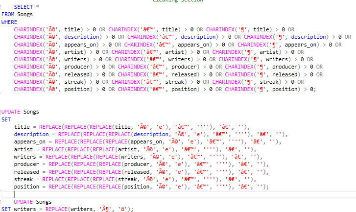
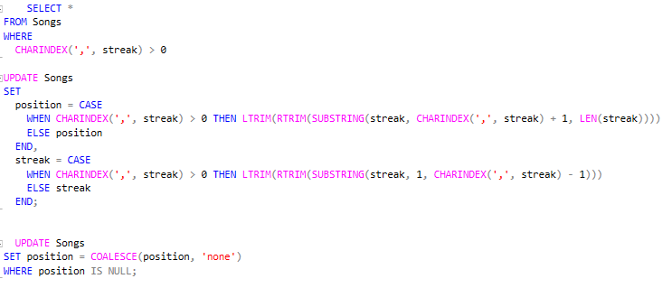
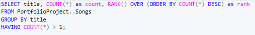
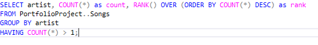
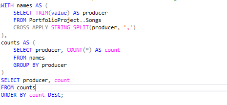
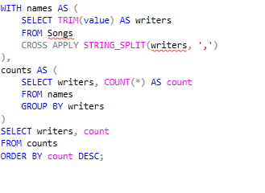

by Garikayi Tarambiwa

The dataset titled "500 Greatest Songs of All Time" is an organized collection of songs, each with specific attributes can be accessed here. The analysis was carried out in SQL. Each row represents a song and its associated details. The dataset contains the following columns: 'title', 'description', 'appears on', 'artist', 'writers', 'producer', 'released', 'streak', and 'position'. The 'title' column specifies the song's name, while 'description' provides a brief summary or backstory for the song. 'Appears on' tells us the album where the song was featured, and 'artist' names the musician or group who performed the song. The 'writers' column mentions who wrote the song, and 'producer' indicates the song's producer. 'Released' shows the month and year when the song was released, 'streak' gives the duration of the song's popularity or chart performance, and finally, 'position' notes the highest ranking the song achieved. 
Fig 1. Removing Special Characters
In the first part, the code identifies and addresses encoding errors or special characters in multiple columns. The initial SELECT statement scans for rows with certain irregular characters, such as 'é', '’', '¶', which might be indicative of encoding inconsistencies. Following this identification, the UPDATE statements replace these characters with standard ones across all relevant columns. Furthermore, a specific character replacement is done in the 'writers' column, where 'ö' is replaced with 'ö'. This overall process of replacing irregular or special characters helps standardize the dataset and prepares it for further analysis.
Fig 2. Handling missing values
The second part of the code focuses on data manipulation and missing data handling. It particularly addresses the 'streak' and 'position' columns. If a comma is found in the 'streak' field, the value is split at the comma. The portion after the comma is moved to the 'position' field, while the part before the comma stays within 'streak'. Finally, the code replaces any NULL values in the 'position' column with the term 'none'. This manipulation ensures completeness in the dataset by handling missing values and helps prevent potential errors during subsequent statistical analysis.
Next, I analysed the dataset, starting with the song that appeared the most.
Fig 3. Ranking songs by how many times they appear on the dataset
The provided query output lists songs that appear more than once in the dataset, along with their frequency (count) and rank based on their frequency. The song "Crazy" has the highest frequency, appearing 4 times in the dataset, making it the most recurring song and ranking it as number 1. The song "Blue Suede Shoes" is the second most recurring song, appearing 3 times, and it holds rank number 2. All other songs in this list appear twice in the dataset, sharing the third rank. These include iconic songs such as "Billie Jean," "California Girls," "Anarchy in the U.K.," and "Every Breath You Take," among others. The repetition of these songs in the dataset might indicate different versions of the same song (like remakes or covers) or the same song appearing in different contexts or categories.
Fig 4. Ranking Artist by Appearance
Next, I analysed the producers and their influence on the top 500 songs. The provided query output lists the names of producers and the number of songs they have produced, sorted in descending order by the count. The producer with the most songs in this dataset is George Martin, who produced 23 songs. He is followed by Leonard and Phil Chess and Jerry Wexler, each having produced 10 songs. Steve Sholes, Wilson, and Dozier are tied in the next position, each having produced 8 songs. Notably, some producers appear to be listed twice, perhaps due to inconsistencies in the naming conventions, such as 'Phil Spector' and 'Spector' both appearing separately.
In general, the output shows a wide range of producers with varying levels of output. This could be indicative of their individual career spans, the artists they worked with, their genre specializations, or the periods during which they were active. Some producers have worked on numerous hit songs and have a higher count, while others might have had fewer but equally influential hits. The variation in the counts can provide an interesting perspective on the contributions of different producers to the songs in the dataset.
Fig 5. Ranking Producers by Appearance
The provided query output details songwriters and the count of songs they've penned, sorted in descending order by the count. The songwriter with the most songs in this dataset is John Lennon, who has written 23 songs. He's followed closely by Paul McCartney with 22 songs. In third place is Dylan (presumably Bob Dylan), who has written 14 songs. Keith Richards and Mick Jagger are next, each having written 12 songs. These figures represent some of the most iconic and influential figures in rock and pop music history, their prolific songwriting contributing to the enduring appeal of their music.
Additionally, other significant contributors include Brian Holland, Lamont Dozier, Brian Wilson, and Eddie Holland, each of whom has written 8 songs. These four individuals are notable figures in the Motown sound, with Holland, Dozier, and Holland forming a legendary songwriting and producing team. Some artists, such as Prince and Springsteen, appear to write for themselves, each with 5 songs credited.
Fig 6. Ranking Writers by Appearance
The Jupyter Notebook to open the full python script for this project can be found here.